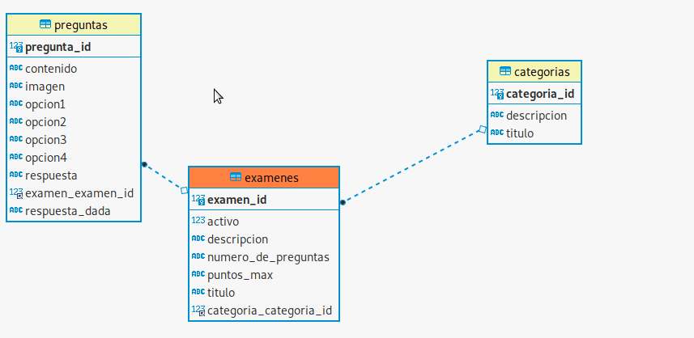
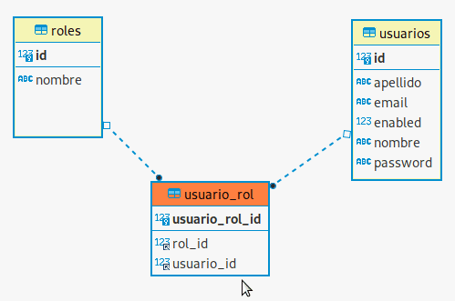

Data model

This is the database relationship model from which the project was carry out. This model involve three tables Category, Exam and Questions.
So there are One-to-Many relationship between Category and Exam table. On the other side is the same concept for Exam and Question table.
Which means that one row in table Categories links to many rows in table Exam and that is the same realtionship between Exam and Question table.

This is the database relationship model regarding users in which means that multiple records in User table
are asocited with multiple records in Role table.
On the other side user-rol table is a itermediate table that allows two tables act as though a relationship were one-to-many for both